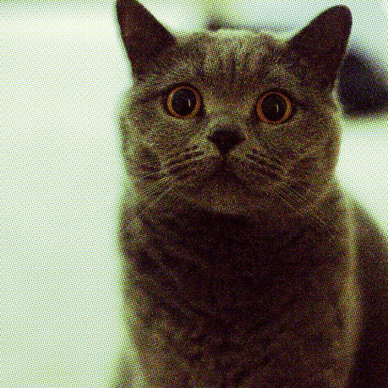
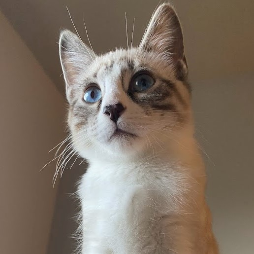

About
Hello, my name's Sophia.
I am from Tacoma, WA and study Computer Science at Western Washington University. So far, my career interests are web dev, ux research, and human-computer interaction. When I'm not studying, I enjoy playing old video games, trying new foods, and listening to electronic music.
Pets
This is Mura, our oldest cat. She likes licking ice cream, eating grass, and watching birds. She was born Sept. 2019.
Sputnik is named after the soviet satellite. He is often seen looking silly and sprinting full speed at Mura. He was born Sept. 2021.